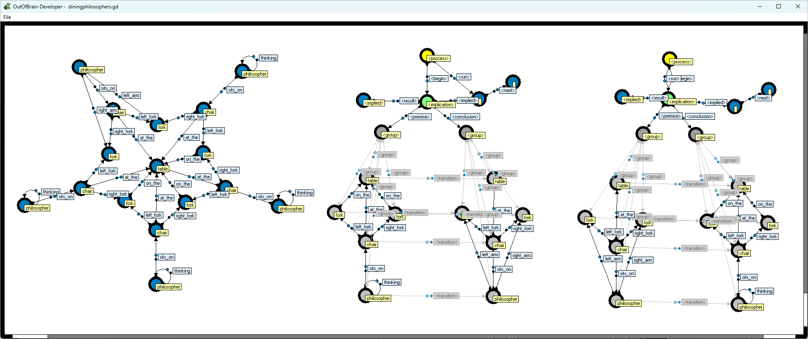
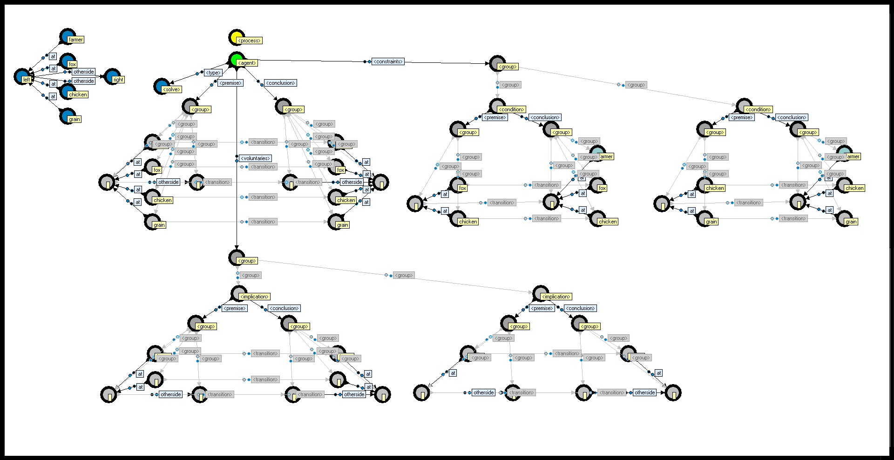

OutOfBrain
OutOfBrain is (2004 - 2008) an application for developing and running multi-agent systems based on graph rewriting.
OutOfBrain is a multi-agent system that runs in an executable graph, where instructions and memory reside in the same space. The executable graph is visualized in real-time, showing what the agents are doing, and allowing for making changes to the agents' behavior and state on the fly. Moreover, OutOfBrain is a client-server program, such that multiple developers can view and edit the same graph in real-time.
See the reference manual: OutOfBrain Reference Manual
Screenshots:
Dining Philosophers

River Crossing Puzzle

In 2005 I attended AAMAS-05, the fourth international joint conference on Autonomous Agents and Multiagent Systems (by IFAAMAS) in Utrecht, The Netherlands. I got to speak with Albert van Breemen, who was working at the time for Philips on iCat, a robotic research platform for studying social human-robot interaction. We got talking about OutOfBrain and he invited me to come to Eindhoven to give a presentation. I went to Eindhoven and gave a presentation about OutOfBrain to a group of researchers at Philips Research. I was hoping that the researchers would see the potential of OutOfBrain as a platform in their research on social human-robot interaction. Alas, there was no follow-up.
I then got into contact with professor Rineke Verbrugge at the University of Groningen (Faculty of Mathematics and Natural Sciences - Artificial Intelligence - Multi-Agent Systems Group). This led to Joris IJsselmuiden doing his master thesis in 2006 on using OutOfBrain as a platform for studying qualitative decision theory and graph rewriting. We worked on developing an Adaptive Diary Assistant, a multi-agent system that uses qualitative decision theory to help the user plan his or her day, based on the user's preferences and current state. Joris is a very smart person, and I learned a lot from him. We got the Adaptive Diary Assistant partially working, but ran out of time and did not complete the whole application.
See Joris IJsselmuiden's paper Qualitative Decision Theory and Graph Rewriting in an Adaptive Diary Assistant, available here and here and here.